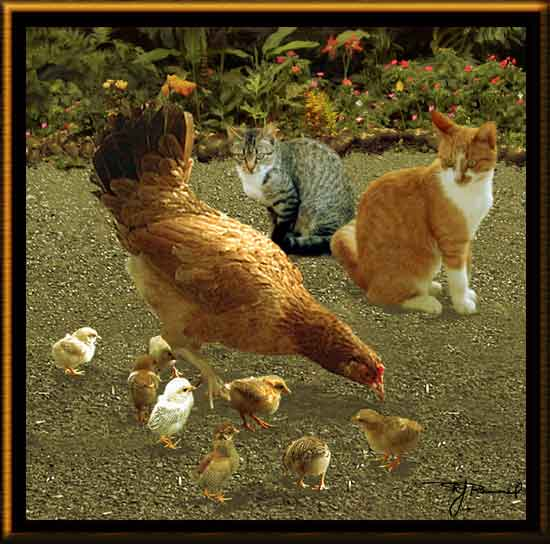

| Dinner? Paintage. Well, it would be dinner if not for mother hen. The background was painted; and the chicks, hen, and two cats are each from separate photos I took around the outside of our house. Soon after this picture was made, all but two of these chicks disappeared--perhaps eaten by the cats. They are all wild animals that have taken to us, maybe because we feed them. |